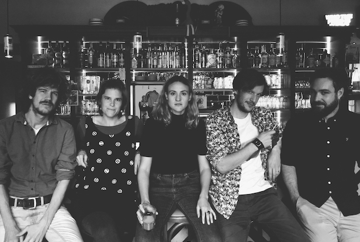

Strange Rituals Booking
shows, tours, and rituals for these cold blooded new times with artists and bands we love
Strange Rituals Booking is a DIY booking project. Among the artists we work with are Apollo Ghosts, Attention
Please, Catastrophe Waitress, EggS, Flora, Jon McKiel, Lambs & Wolves, Ned Collette, Nick Wheeldon, Sean Pratt,
and St. Moon. As promoters and bookers, we are part of an independent, community-oriented, and non-commercial
scene. Our goal is to provide a low-threshold platform for music we love by voluntarily organizing shows and
tours. The first edition of the Strange Rituals Festival will take place from November 6 to 7, 2026, at the
Dieselstraße in Esslingen. The lineup will be announced soon.
Roster
Apollo Ghosts
(Indie-Rock - CA)
Territory: DE

Attention Please
(Indie/Folk - FR)
Territory: DE

Catastrophe Waitress
(Indie/Folk - DE)
Territory: EU/CH

EggS
(Jangle-Pop - FR)
Territory: DE/CH

Flora
(Indie-Pop - DE)
Territory: EU/CH

Jon McKiel
(Experimental Indie-Pop - CA)
Territory: DE/FR

Lambs & Wolves
(Indie/Folk - DE)
Territory: EU/CH

Ned Collette
(Folk - AU)
Territory: DE/CH

Nick Wheeldon
(Folk/Anti-Folk - FR)
Territory: DE

Sean Pratt
(Folk/Country - US)
Territory: EU/CH

St. Moon
(Slowcore-Country - DE/FR)
Territory: EU/CH
Upcoming Shows
- 06.03.2026 – Catastrophe Waitress, Zehntscheuer, Entringen DE
- 13.03.2026 – Catastrophe Waitress, Jazzhaus, Freiburg DE
- 26.03.2026 – Flora, La Pointe Lafayette, Paris FR (w/ Paris Banlieue)
- 29.03.2026 – Flora, Hafen 2, Offenbach DE
- 30.03.2026 – Flora, Schokoladen, Berlin DE
- 02.04.2026 – Flora, Noch Besser Leben, Leipzig DE (w/ Torte la bûche)
- 21.04.2026 – Steve Gunn, Dieselstrasse, Esslingen DE
- 24.04.2026 – Catastrophe Waitress, JAK, Weinstadt DE
- 24.04.2026 – Nick Wheeldon, Schatulle, Stuttgart DE (w/ St. Moon)
- 25.04.2026 – Nick Wheeldon, Cafe Nun, Karlsruhe DE (w/ St. Moon)
- 26.04.2026 – St. Moon (EP release party), Le Grillen, Colmar FR (w/ Nick Wheeldon)
- 27.04.2026 – Nick Wheeldon, Poolbar, Freiburg DE (w/ St. Moon)
- 30.04.2026 – Nick Wheeldon, Deichdiele, Hamburg DE
- 02.05.2026 – Nick Wheeldon, Alte Dorfschenke, Rinkerode DE
- 06./07.11.2026 – Strange Rituals Festival, Dieselstrasse, Esslingen (Line-Up: tba)
- 07.11.2026 – Sean Pratt, Cafe Nun, Karlsruhe DE
- 08.11.2026 – Sean Pratt, Hiéro, Colmar FR
- 11.11.2026 – Sean Pratt, Folk Cafe, St. Gallen CH
- 12.11.2026 – Sean Pratt, Poolbar, Freiburg DE
- 13.11.2026 – Sean Pratt, Chair De Poule, Paris FR
Past Shows
- 11.02.2026 – Ned Collette, Efesto House, Bologna IT
- 07.02.2026 – Ned Collette, Feikunst Krüger, Hamburg DE
- 05.02.2026 – Ned Collette, Life Is A Milstrone, Paris FR
- 04.02.2026 – Ned Collette, Peniche Adelaide, Paris FR
- 02.02.2026 – Ned Collette, Poolbar, Freiburg DE
- 31.01.2026 – Ned Collette, Horch!, Pforzheim DE
- 30.01.2026 – Ned Collette, Schatulle, Stuttgart DE
- 04.10.2025 – Jake Xerxes Fussell, Dieselstrasse, Esslingen DE (w/ Lambs & Wolves)
- 12.09.2025 – Ryan Davis & the Roadhouse Band, Cafe Nun, Karlsruhe DE (w/ Ned Collette)
- 11.09.2025 – Ryan Davis & the Roadhouse Band, Dieselstrasse, Esslingen DE (w/ Ned Collette & Sloe Paul)
- 10.09.2025 – Ryan Davis & the Roadhouse Band, Poolbar, Freiburg DE (w/ Ned Collette)
- 29.03.2025 – Apollo Ghosts, Cafe Nun, Karlsruhe DE (w/ Lambs & Wolves)
- 28.03.2025 – Apollo Ghosts, Alte Dorfschenke, Rinkerode DE
- 27.03.2025 – Apollo Ghosts, Volksbad, Flensburg DE (w/ Baker Seats)
- 26.03.2025 – Apollo Ghosts, Ms. Stubnitz, Hamburg DE (w/ The Funeral Crankies)
- 25.03.2025 – Apollo Ghosts, Noch Besser Leben, Leipzig DE
- 22.03.2025 – Apollo Ghosts, Tennis Bar, Berlin DE (w/ Big Gainer)
- 21.03.2025 – Apollo Ghosts, Kulturfabrik Salzmann, Kassel DE
- 20.03.2025 – Apollo Ghosts, Dieselstraße, Esslingen DE (w/ Flora)
- 18.03.2025 – Apollo Ghosts, Slow Club, Freiburg DE (w/ Lambs & Wolves)
- 17.03.2025 – Apollo Ghosts, Glockenbachwerkstatt, München DE
- 02.11.2024 – Lambs & Wolves, Jazzhaus, Freiburg DE (w/ The Wooden Wolf)
- 30.10.2024 – Lambs & Wolves, Kafi Otmar, St. Gallen CH
- 29.10.2024 – Lambs & Wolves, Glockenbachwerkstatt, München DE (w/ Martin Schenk)
- 27.10.2024 – Lambs & Wolves, Atelier Prozitron, Aachen DE
- 26.10.2024 – Lambs & Wolves, Dieselstrasse, Esslingen DE (w/ O‘Dear)
- 14.09.2024 – Lambs & Wolves, The Sound of Bronkow Festival, Dresden DE
Contact
Write us: contact [at] strangeritualsbooking.com
Follow us: